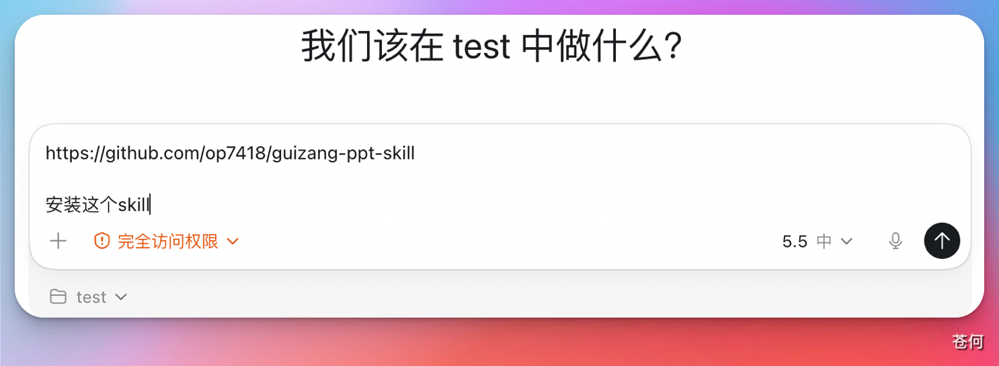
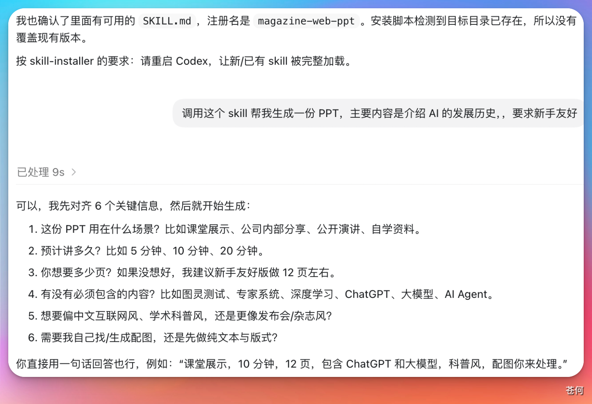
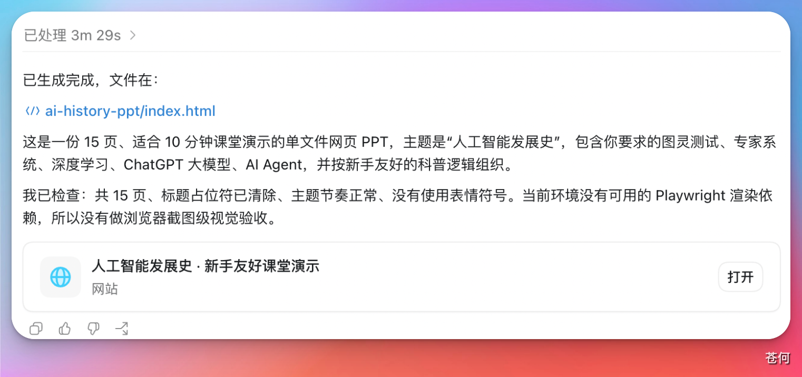

这个案例演示一个对新手很有帮助的流程：如何让 Codex 协助安装一个开源 Skill，并在安装完成后立即调用它完成任务。
适用场景#
- 你已经找到一个想用的社区 Skill。
- 你想让 Codex 帮你完成安装，而不是手动整理目录和文件。
- 你希望安装后立刻用一个真实任务验证它是否可用。
准备一个 Skill 来源#
首先要有这个 Skill 的来源地址。很多开发者会把自己做好的 Skill 放在 GitHub 仓库里，供其他人安装和复用。
这个案例里使用的是一个社区 PPT Skill：
第一步：安装#
你可以把 Skill 仓库地址交给 Codex，请它协助识别并完成安装流程。
例如：
请帮我安装这个 Skill：https://github.com/op7418/guizang-ppt-skill
安装完成后，告诉我它的用途、依赖要求，以及应该如何调用。
不同工作区里，安装方式可能不完全一样。有些会直接支持安装，有些则会先分析仓库结构，再提示你确认放置位置或依赖要求。
第二步：调用使用#
安装完成后，可以直接让 Codex 调用这个 Skill 去完成一项真实任务。
如果这个 Skill 已经提前安装过，你通常也可以通过斜杠命令、技能选择器，或者在任务里明确点名的方式来调用它。

例如：
请使用刚刚安装的 PPT Skill，根据“AI 编程工具入门”这个主题生成一份适合分享的演示稿。先告诉我还缺哪些关键信息。如果你没有给足上下文，Codex 往往会先回到这个 Skill 的操作手册里，看看它需要什么输入，然后再向你追问必要信息。

当你补齐背景、主题、受众或风格要求后，它会按该 Skill 的流程去读取 README、模板和相关文档，再生成结果。

如果这个 Skill 的默认产物是 HTML 演示稿，你通常可以直接在 Codex 内置浏览器里打开预览。

你要重点检查什么#
- Codex 安装的是不是你指定的那个 Skill，而不是名称相似的别的仓库。
- 安装后有没有说明依赖要求、输出格式和调用方式。
- 生成结果是否符合这个 Skill 原仓库描述的能力边界。
- 如果结果不理想，是 Skill 本身限制，还是你提供的输入信息不够。
风险提醒#
- 社区 Skill 不是官方能力，质量和维护状态差异会很大，使用前最好先看仓库 README。
- 不要默认“给出 GitHub 链接就一定能一步安装成功”，有些 Skill 还会依赖额外脚本、模板或本地环境。
- 第一次验证时，优先选一个小任务，确认 Skill 能正常运行后，再拿去做正式产物。